Preview of the element14 project page. The orange boxes are the separate form fields. Everything under "Body" goes into the Body editor, "References" into the references editor. Images: drag each file from docs/element14/img/ into the editor where the image sits here, then add the alt text. Yellow = still to fill.
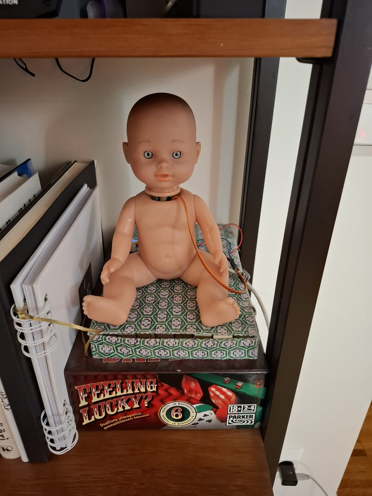
This is a doll that turns its head only when nobody is in the room. Actually it is an M5Stack AtomS3R and a SG90 micro servo, listening to wifi. The router is the only sensor. When someone comes near, even outside a closed door, it stops dead in whatever pose it has reached, and waits.
I'm still in love with exploring what tiny cheap esp32 based controllers can do. The 3 M5 Atom devices lie on my desk, so it was an easy bet. But a microcontroller alone does not really differ from a PC, and for Halloween we need something kinetic. I did the over-engineered version of that already (home automation reads a PIR and makes a Zigbee Fingerbot push the button on a camera. A lot of infrastructure to push one button). So this time "underengineered".
Unknown is scary. It's more scary to realize an object has moved than to actually see it move. So I turned the concept upside down: it only moves when nobody is there to see it. No need for audio either. The sound of a servo in an empty room is the most scary thing, and it stops when you enter.
Then I remembered the dozens of projects where people "see through walls" with wifi CSI. We do not need to see through walls. We just need to know when nobody is near. Wifi is already there, so no extra sensor. And one thing simplifies the whole problem: false positives do not matter. Who cares if the servo stops when nobody is there. It just must never move when a person is near.
And the same problem as checking the fridge light: how do you know it moves if you can't be in the room? My IP surveillance camera films it. No CGI, no editing, no effects.
[VIDEO: embed here. One line on what it shows and where (library area).]
| Part | What it does |
|---|---|
| M5Stack AtomS3R (ESP32-S3, 8 MB flash, 8 MB PSRAM, 128x128 LCD, BMI270 IMU) | Receives wifi, computes CSI, decides, drives the servo. The same one that ran my Micro Arcade. |
| SG90 micro servo | Turns the head. Signal on Grove G2, 5V and GND from the Grove port. |
| Grove cable | Cut and soldered to the servo lead. |
| Doll | Head off, servo inside the body, head back on a 3D printed adapter on the horn. |
| 5 V USB-C supply | Powers everything. |
| Wifi router (Google Nest mesh, channel 11) | The transmitter. Already there. |
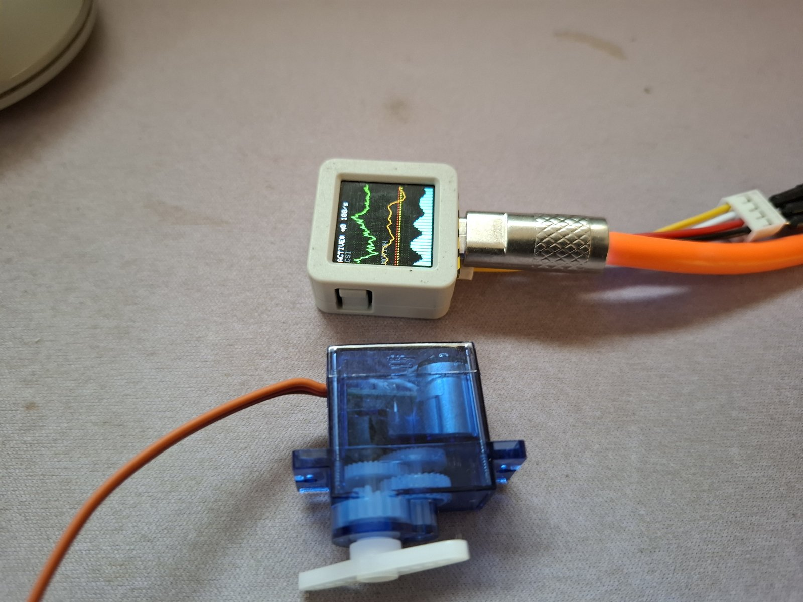
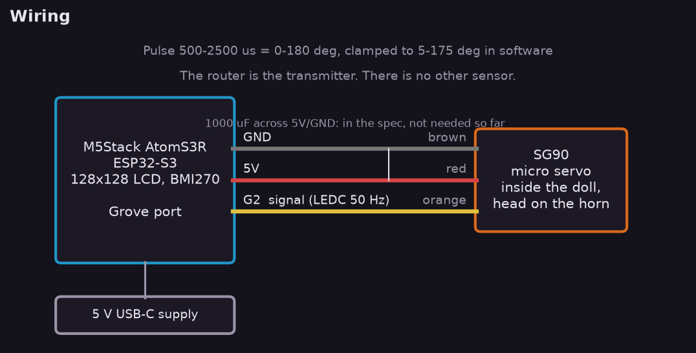
Wiring is three wires. I had to swap two of them before it moved (the colours on my Grove cable did not match M5's table, so check with a meter). The spec had a 1000 uF capacitor across the servo supply, against brownouts when servo current and wifi TX peak together. In the first 75 minute run with 167 moves there was not a single reset without it, but that run had nothing on the horn. [fill: did it reset with the head on? cap added or not?]
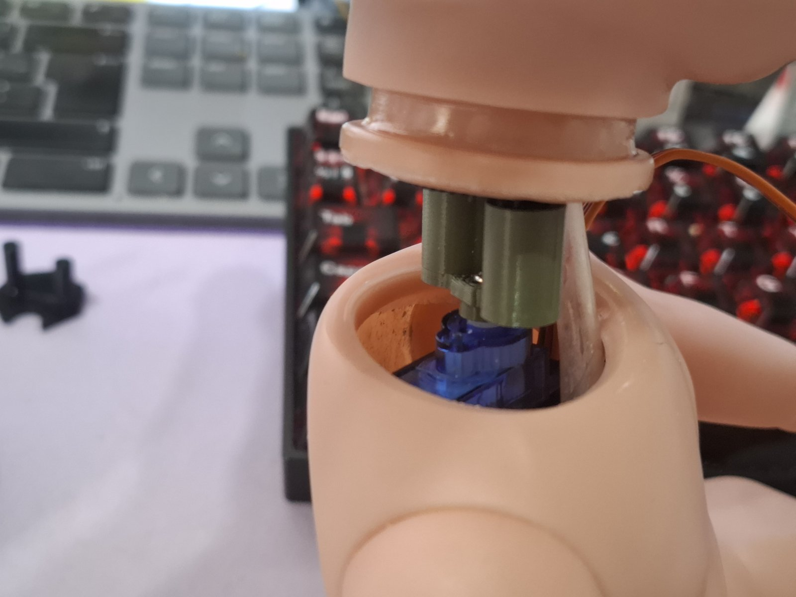
The neck: [fill: two lines on the printed adapter, how it holds the horn and the head]
Wifi (802.11n, 20 MHz) is OFDM. The channel is split into 64 subcarriers, 312.5 kHz apart. Every frame starts with a training field (the LLTF) the receiver already knows. Dividing what arrived by what was sent gives the channel on each subcarrier. That is Channel State Information. The ESP32 hands it out per frame, as int8 I/Q pairs, in a callback.
Y_k = H_k * X_k + N_k k = subcarrier, X_k known (LLTF) H_k ~ Y_k / X_k complex channel estimate a_k = |H_k| = sqrt(I_k^2 + Q_k^2) f_c = 2462 MHz (channel 11) lambda = c / f_c = 12.19 cm f_k = f_c + k * 312.5 kHz, k = -26..-1, 2..26 -> 51 subcarriers used
(Subcarrier 0 is DC, beyond +-26 are guards. Subcarrier 1 sits in the first word of the buffer, which the S3 can flag invalid, so I skip it every time to keep the feature consistent.)
Indoors the signal arrives over many paths: direct, off the walls, off the floor, off you. Each path p has its own gain a_p and delay tau_p:
H(f, t) = sum_p a_p(t) * exp(-j * 2*pi * f * tau_p(t))
The paths add up with different phases at different frequencies. Where they cancel, the channel has a notch. This is frequency-selective fading, and it is what the 51 amplitudes look like in my lab:
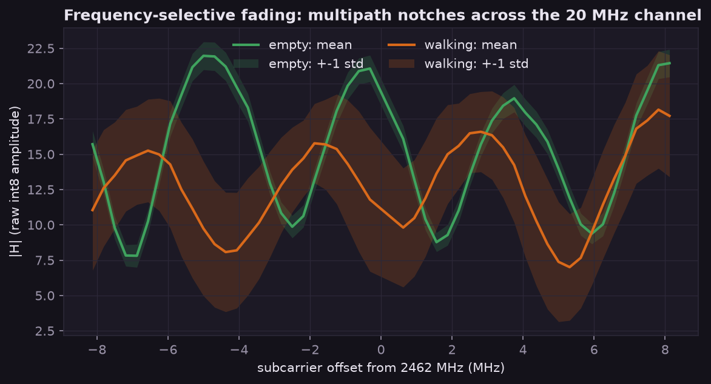
Empty room: a stable comb, peaks to notches 9 dB, the spread per subcarrier is small (std 0.87). With someone walking the comb smears (std 3.9, 4.5x). The ripple repeats about every 4.3 MHz. For a pure two-path channel that would mean a delay difference of 1 / 4.3 MHz = 230 ns, about 70 m of extra path, which is too much for one room (more likely several paths summed, plus the receiver's own filter shape. With amplitude only I can't separate them).
When a person moves, the path lengths through them change. A reflected path that gets lambda / 2 = 6.1 cm longer has rotated its phase a full turn, so the notches slide around. The rate is the Doppler shift of that path:
f_D = (1 / lambda) * d(path length)/dt reflection, person walking 1 m/s toward/away: path changes ~2 m/s f_D ~ 2 / 0.1219 = 16 Hz (upper bound, real motion is slower and mixed)
So 100 frames per second is plenty (Nyquist 50 Hz). The measured amplitude spectrum agrees. Almost all of the motion energy is below 5 Hz:
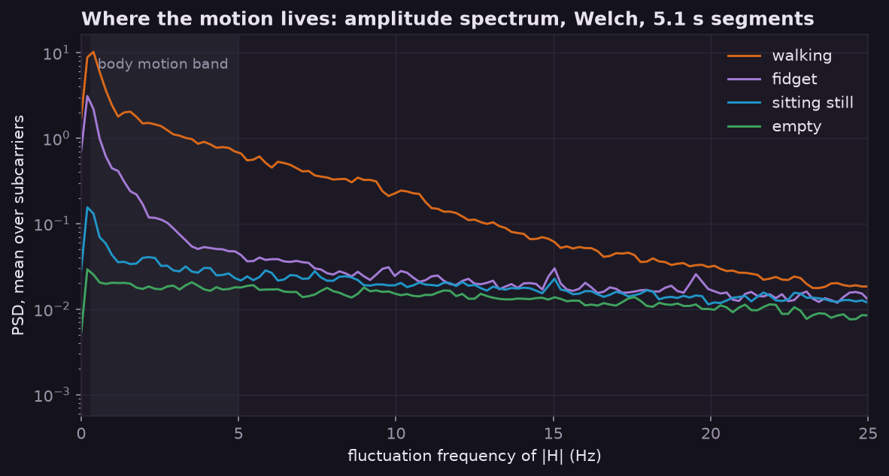
| Segment | power 0.3-5 Hz | vs empty |
|---|---|---|
| walking | 8.07 | 96x |
| fidget (seated, small moves) | 1.09 | 13x |
| sitting still | 0.17 | 2.0x |
| empty | 0.084 | 1x |
Where to put it. CSI sees motion near the line between the router and the receiver, inside roughly the first Fresnel zone:
r_1 = sqrt(lambda * d1 * d2 / (d1 + d2)) example, router 5 m away, person in the middle: r_1 = sqrt(0.1219 * 2.5 * 2.5 / 5) = 0.39 m
That is the strongest zone, not a hard border (the hallway test below shows it reaching through a closed door). Placement turned out to matter more than any setting. Put the Atom so the router-Atom line crosses where people walk. [fill: distance Atom to router in the library]
CSI only comes with frames, and an idle room has no traffic. So the Atom makes its own: it pings its router every 10 ms, and every reply brings one CSI frame. A source MAC filter keeps only the router's frames. Same trick as Espressif's csi_recv_router example.
First gate, before anything else was built, 10.5 minutes in an empty room:
| Median rate | Min | Longest gap | Ping lost | Queue drops |
|---|---|---|---|---|
| 100 /s | 95 /s | 85 ms | 0 | 0 |
The firmware is C++ on PlatformIO (arduino-esp32 3.3.11 on ESP-IDF 5.5, the pioarduino platform). The Atom ran UIFlow MicroPython before, and MicroPython does not expose the CSI callback, so this is the one part where C++ was not a preference.
Per frame, then per window. Everything runs on the Atom; the PC is only a recorder.
1. amplitudes a_k(t), k = 1..51
2. spatial spread s(t) = std_k( a_k(t) ) "spatial turbulence"
3. Hampel filter window 2K+1 = 7 frames:
m = median, MAD = median(|s - m|)
if |s(t) - m| > 3 * 1.4826 * MAD then s(t) = m
4. motion metric M(t) = var( s ) over the last 1.5 s (~150 frames)
calibration (button 5 s, leave the room, 60 s recorded):
mu, sigma = mean and std of M in the empty room
LOW = max( mu + 3 sigma, 2.5 mu )
HIGH = max( mu + 6 sigma, 3.5 mu )
Step 2 and 4 are the same idea as ESPectre's moving variance segmentation. Step 3 is there because single bad frames (one frame much lower on every subcarrier) put a 1.5 s box step into the metric, exactly the length of the window. The Hampel filter replaces them with the local median before they reach the variance.
Why the ratio floors and not just mean + K sigma: see the false alarm part below. Short version, the empty-room metric is not Gaussian at all.
Scripted baselines: the PC speaker reads out cues ("walk around", "sit still", "go to the hallway") and the logger labels the data. 2 minutes per segment, every raw frame recorded. This is run 3, with the video mode running live on the Atom the whole time:
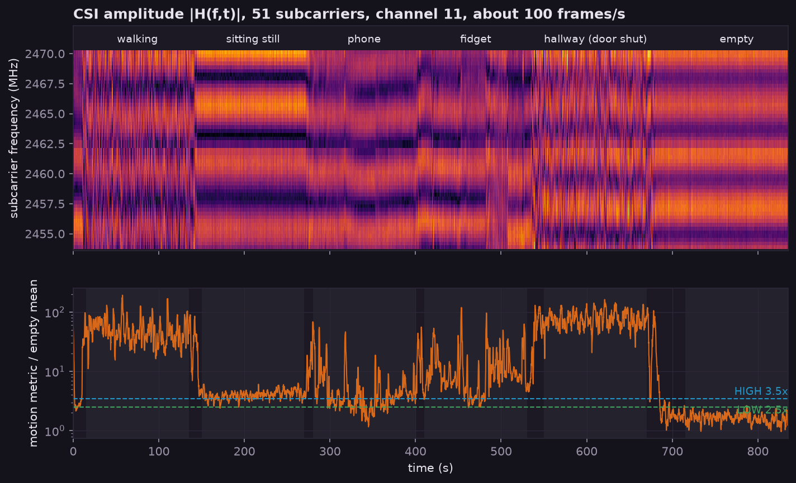
Top is the raw radio: 51 subcarriers, 83 382 frames. You can see each activity in it without any processing. Walking shakes the whole comb, sitting still moves a notch now and then, the hallway (someone moving outside the closed door) is almost as loud as walking, and the empty room is flat stripes. Bottom is the metric against the calibration mean.
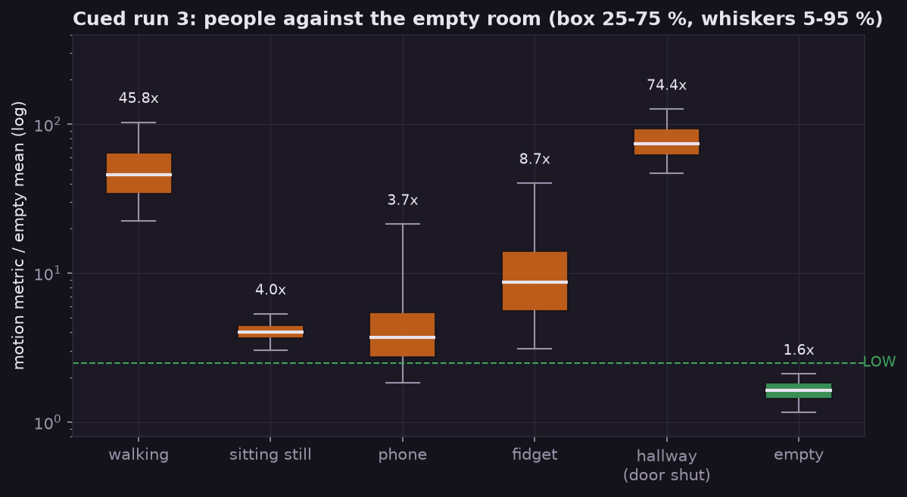
| Segment | median x empty mean | time above LOW | what the Atom did |
|---|---|---|---|
| walking | 45.8 | 100 % | held still |
| sitting still | 4.0 | 99.7 % | held still |
| sitting with phone | 3.7 | 83 % | held still |
| fidget | 8.7 | 99.8 % | held still |
| hallway, door shut | 74.4 | 100 % | held still |
| empty | 1.6 | 0.3 % | 2 moves |
No move with anyone in the room or at the door. Sitting still is the hard case. In run 2 it scored the same as the empty room (about 1x). In run 3 it was 4x. The Atom sat differently in run 3, and I think placement is most of the difference.
I left the house for an hour with logging on (verified empty). The median metric stayed flat, no drift. But the tails:
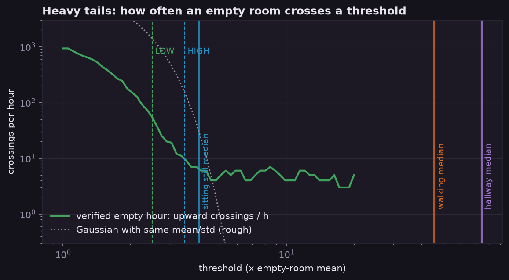
| Threshold (x mean) | 1.5 | 2 | 2.5 | 3 | 3.5 | 5 |
|---|---|---|---|---|---|---|
| Crossings per hour, empty | 434 | 157 | 54 | 21 | 10 | 4 |
In units of its own mean the empty metric has std 1.02, the shape of an exponential, not a bell. A Gaussian with the same mean and std would almost never pass 5x. The real room does it 4 times an hour, and nothing above 3x lasted over 1.5 s. So mean + 6 sigma from a 60 s calibration was far too tight (the calibration std was 0.0029, it does not describe an hour), and the floors went in: LOW 2.5x, HIGH 3.5x. People walking are 20-100x, so there is plenty of room between.
And a false alarm here costs almost nothing. It only means the doll waits a bit longer. 54 crossings an hour at LOW looks bad, but each one is short and only restarts a 10 s quiet timer.
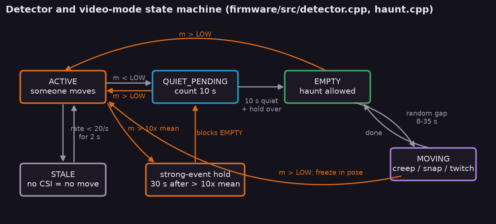
In EMPTY it "haunts": every 8-35 s a move to a random pose between 30 and 150 degrees. Mostly a slow creep (40-110 ms per degree), 25 % a snap (6 ms per degree), 15 % a small 8 degree twitch, and 25 % of moves end staring into the camera.
A motor moving right next to the antenna is motion too. If it pushed the metric over LOW, every move would freeze itself. 75 minutes, house empty, 167 moves:
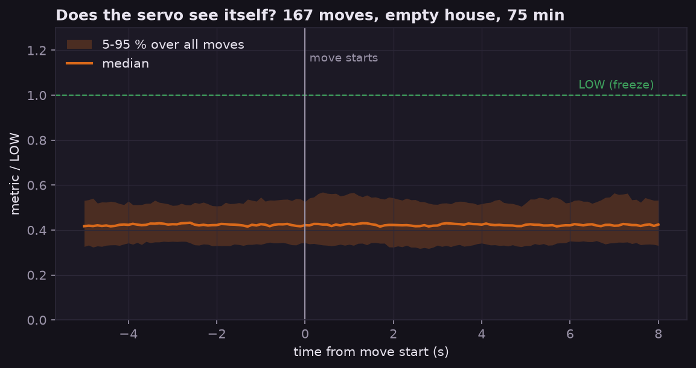
Nothing. Median 0.42x LOW before a move, and the 95th percentile peaks at 0.57x LOW during it. One freeze in the whole run, during a burst of weak disturbance with no move involved (4.1x mean, cause unknown). This was without the head. [fill: same with the head on]
Serial.printf waited the 100 ms TX timeout. Main loop down to 1 Hz, the rate counter showed 200/s. The prop runs on a charger with no reader, so it would have hit for real. Serial.setTxTimeoutMs(0)."Real or bust": every trace in this post and on the screens is measured data, nothing synthetic.
tools/scope.py, a full screen PC scope: subcarrier waterfall, metric, spectrum and a big state line ("EMPTY moving in 7 s"). Also as a single exe for a laptop without Python. It says hello on UDP broadcast and the Atom streams to it, no reflashing.tools/detector.py is a Python copy of the firmware detector. It reads its constants from config.h, so the two cannot drift on numbers. replay.py and haunt_sim.py run recordings through it, 27 unit tests, one per rule.tools/post_figures.py made every chart here from the logs.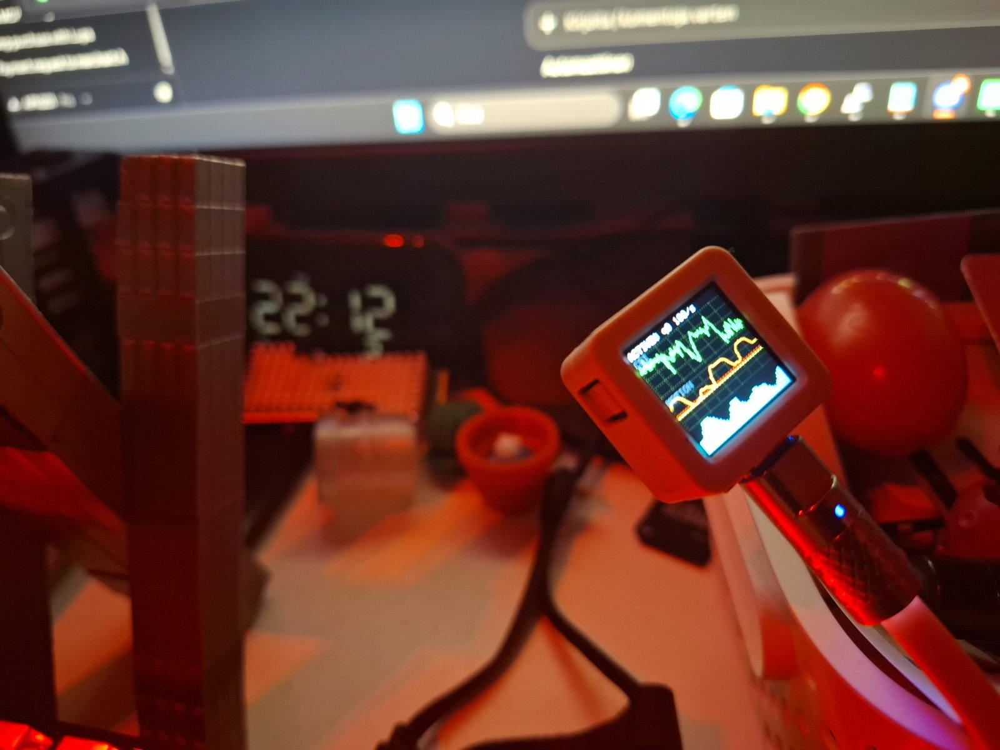
firmware/include/secrets.example.h to secrets.h, set SSID (2.4 GHz), password and your PC's IP.py -m pip install --user platformio pyserial numpy. Run PlatformIO from PowerShell or cmd, not Git Bash.cd firmware, py -m platformio run -t upload.py tools/scope.py on the PC to watch it think.Button: short press cycles scope, status and screen off. Held 2-5 s, the head returns slowly to the start pose. Held 5 s or more, calibration.
Not done yet: the IMU is on the board and could lock the servo when someone lifts the doll.
Code: github.com/apn201/nobody_home (GPL-2.0)
csi_recv_router. https://github.com/espressif/esp-csi